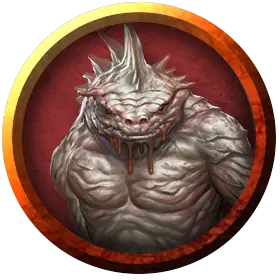

Старый троглодит
Old Troglodyte
Средний Гуманоид (Троглодит), хаотично-злой

Класс Доспеха 11 (природный доспех)
Хиты 8 (2к8 - 1)
Скорость 30 футов
| мод | спас | ||
|---|---|---|---|
| СИЛ | 14 | +2 | +2 |
| ЛОВ | 10 | +0 | +0 |
| ТЕЛ | 14 | +2 | +2 |
| мод | спас | ||
|---|---|---|---|
| ИНТ | 6 | −2 | −2 |
| МДР | 10 | +0 | +0 |
| ХАР | 6 | −2 | −2 |
Навыки Скрытность +2
Чувства тёмное зрение 60 футов, пассивное Восприятие 10
Языки Троглодитский
Опасность 1/8 (25 опыта)
Бонус мастерства +2
Особенности
Кожа хамелеона. Троглодит совершает с преимуществом проверки Ловкости (Скрытность), совершенные чтобы спрятаться.
Вонь. Все существа кроме троглодитов, начинающие ход в пределах 5 футов от троглодита, должны преуспеть в спасброске Телосложения Сл 12, иначе станут отравленными до начала своего следующего хода. При успешном спасброске существо получает иммунитет к вони всех троглодитов на 1 час.
Чувствительность к солнечному свету. Находясь на солнечном свету, троглодит совершает с помехой броски атаки, а также проверки Мудрости (Восприятие), полагающиеся на зрение.
Действия
Мультиатака. Троглодит совершает три атаки когтями.
Коготь. Рукопашная атака оружием: +4 к попаданию, досягаемость 5 футов, одна цель. Попадание: Рубящий урон 4 (1к4 + 2).
Описание
Последний вождь троглодитов был недавно убит дроу, что сделало Кол'даана лидером племени. В пещере вождя скрываются три старых беззубых троглодита с 8-ю очками здоровья и не могущих совершать атаки укусом. Эти злобные троглодиты служили советниками бывшему вождю. Кол'даан считает, что они слабы и не хочет иметь с ними дел. Они сражаются только в целях самообороны.